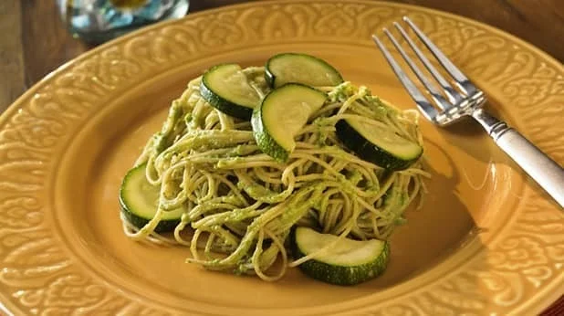

Spaghetti with Zucchini & Pesto

Ingredients
- ¼ cup raw walnuts
- 2 cups fresh basil, packed
- 1 clove garlic
- ½ cup olive oil
- ½ cup parmesan cheese, grated
- 1 lb. spaghetti
- 3 zucchini, sliced thinly
- Salt, to taste
Steps
- Warm a small skillet over low heat for about a minute. Add walnuts and cook, stirring constantly, until they begin to smell toasted, 2-3 minutes. Transfer to plate and let cool.
- Place cooled walnuts in a food processor, along with the garlic and salt. Pulse until the mixture has the consistency of a course meal.
- Add basil to the food processor and pulse until finely minced. Slowly drizzle the olive oil into the processor at a low speed until fully mixed.
- Empty basil mixture into a medium-sized mixing bowl and stir in the Parmesan cheese. Taste and add salt, if needed. Set prepared pesto sauce to the side.
- Bring a large saucepan of salted water to a rolling boil. Add the spaghetti and cook until al dente, approximately 7 minutes. Add the zucchini to the pasta and stir, cooking until pasta is done, about 2 additional minutes.
- Save ¼ cup of the cooking water and then drain the pasta and zucchini, returning them to the empty pot afterwards. Add the reserved pasta water and cook over high heat until all water is absorbed.
- Mix the prepared pesto in with the spaghetti and zucchini, ensuring the pesto gets thoroughly incorporated. Alternatively, you can serve the spaghetti and zucchini onto plates and then top with the pesto.